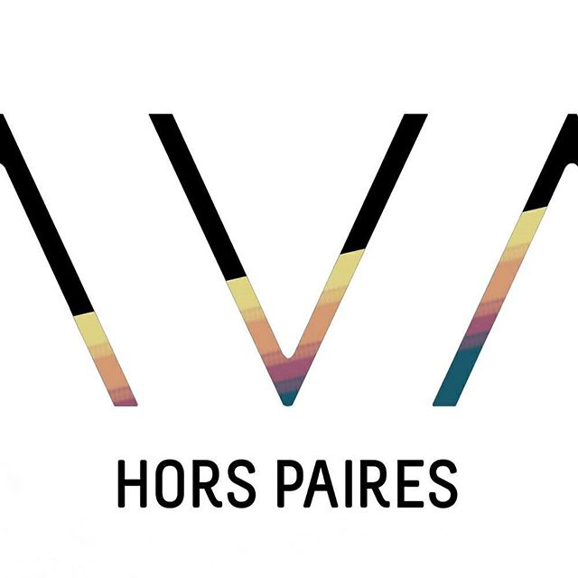
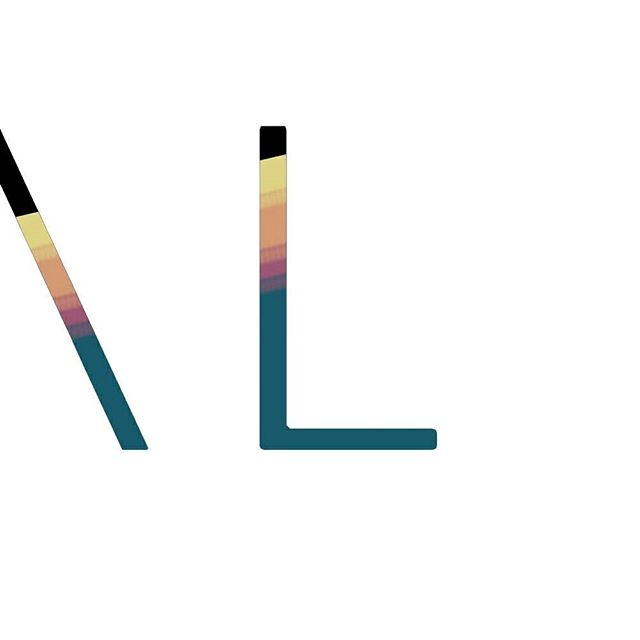
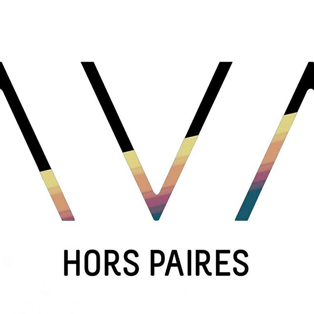
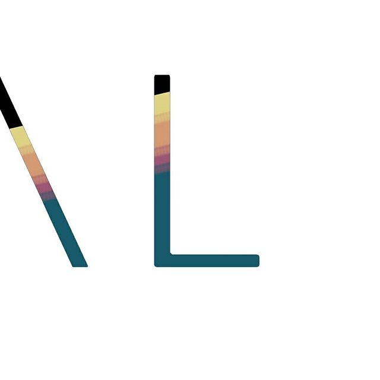
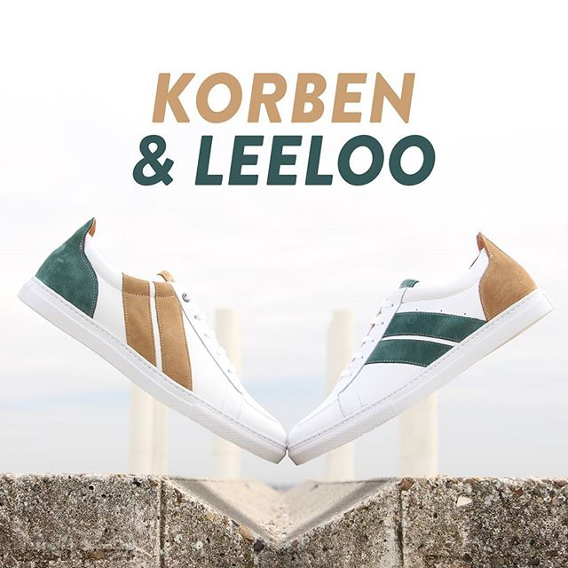

Notre première collection est composée de 2 modèles, chacun décliné en 4 coloris. En hommage à des couples en CAVAL, nos deux modèles s'appellent Korben et Leeloo et Vincent et Mia.
Korben et Leeloo Notre premier modèle joue sur l'asymétrie et la complémentarité : les différences de lignes et les complémentarités de couleurs donnent du mouvement à nos couples de chaussures. Il est disponible en 4 coloris.
Vincent et Mia Notre second modèle joue sur la transversalité : une diagonale unit Vincent à Mia. Il est disponible en 4 coloris.
Hors paires dans les moindres détails Faire des chaussures Hors Paires, c'est aussi miser sur la qualité et le confort.
Au cours de leur élaboration avec notre fabricant Ricardo, nous avons toujours fait le choix de la qualité.
Savoir-faire portugais Fabrication à Guimarães, le berceau portugais de la chaussure
Cuirs italiens pleine fleur de vache, robustes et soyeux. Nous avons utilisé 2 types de cuirs : velours et lisses.
Semelle en caoutchouc Semelle collée et cousue pour qu’elle ne se décolle pas Doublure cuir Pour un confort maximal et une bonne tenue au pied.